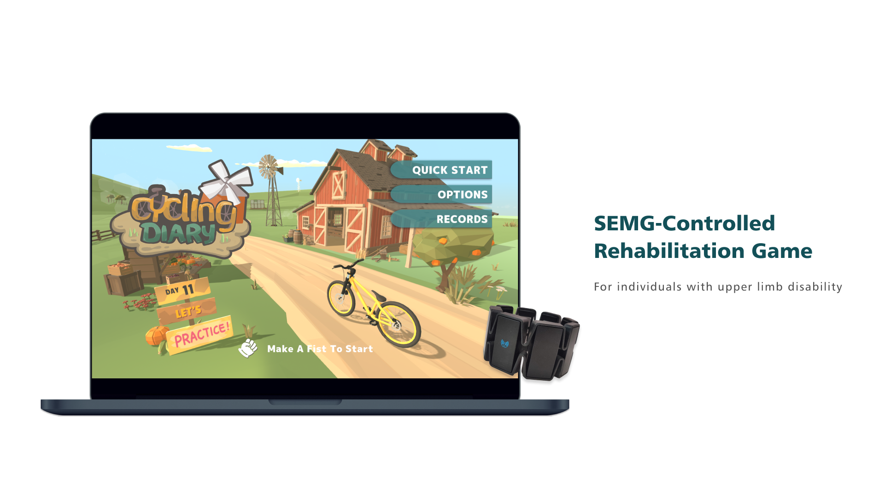

For full functionality of this site it is necessary to enable JavaScript. Here are the
instructions how to enable JavaScript in your web browser
.
HOME
PROJECTS
ABOUT
RESUME

Team
Me (leader): Research, UX Design, Prototype
Keyao Lyu : Research, Visual Design, Prototype, Test
Final Design